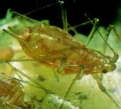
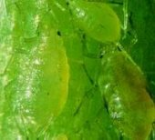
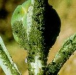

Pirimor
50 DP
Pirimor
50 DP
 Anthio 33 EC
Anthio 33 EC
 Bi 58 EC
Bi 58 EC
 Unifosz 50 EC
Unifosz 50 EC
 Wofatox 50 EC*
Wofatox 50 EC*
 Dimecron 50*
Dimecron 50*
 Lannate 20 L*
Lannate 20 L*
 Sinoratox 40 EC
Sinoratox 40 EC
Levéltetvek
Aphididae
A zöldségféléket számos levéltetűfaj
károsítja szabadföldön és zárt termesztő berendezésekben egyaránt. Többnyire
oligofág kártevők. Kártételük (szívogatásuk) következtében a levelek sárgulnak,
egyes esetekben fodrosodnak, súlyos esetben a növények növekedése leáll. Közvetlen
kártételük mellett vírusterjesztő közvetett kártételük sem lebecsülendő
(vírusvektorok), sőt egyes válemények szerint ez a súlyosabb.
Ismertebb fajok és tápnövényeik:
| Zöld őszibarack
levélteű Myzus persicae Káposzta levéltetű Brevicoryne brassicae Borsó levéltetű Acyrtosiphum pisi Répa levéltetű Aphis fabae Uborka levéltetű Aphis gossipi |
paprika káposztafélék borsó sóska, spenót, spárga kabakosok, bab |
Ajánlott készítmények:
|
 |  |